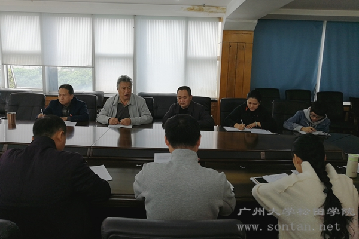

我院党委中心组召开“学习十九大会议精神”会议
松田网讯(记者：卢金媚）11月21日上午，我院党委中心组在行政楼六楼会议室召开“学习十九大会议精神”会议。学院院长庞永师，党委书记蒋茂能，党委副书记李金飞以及学院党委委员、各党总支部书记参加本次会议。
会议上，庞永师院长提出：高等教育要围绕“一切为学生服务”，作为教育工作者要把握方法，不断改善办学条件。要始终坚持不忘初心，牢记使命，真正做到“学懂弄通做实”，做好本职工作，确保学生的意见得到疏通采纳。各基层党组织也要发挥好作用，党性一定不能倒。
蒋茂能书记强调，学习宣传贯彻落实十九大会议精神还需要进一步深入，各基层党组织要组织好学生开展“学习十九大会议精神”的学习活动，确保十九大会议精神真正进入到校园。
李金飞副书记指出，各基层组织的建设还要不断推进，各系要结合我院目前仍存在的一些不稳定因素加强排查，及时做到排除，确保我院一切工作的有序开展。
电气与汽车工程系党总支部书记余晓锣汇报，在参加为期三天的支部书记示范班培训后自己对党的十九大报告又有了更深入的学习和认识。作为民办高校的教育工作者要时刻牢记“优先发展教育”，在党的领导下做好本职工作。
经济学系党总支部书记周育山提出，作为基层党务工作者要做到旗帜鲜明，不管阶层和地方一定要把各项工作做实，不能漏掉基层和党员。即使有些工作存在困难也要慢慢推进开展，学习十九大会议精神主要靠原文，我们要从中体会和贯彻落实。
党委委员、管理学系党总支部书记谷跃兵汇报，在支部书记示范班培训期间学习内容丰富充实，对十九大会议精神也有了更深刻的理解。在党政工作方面党的主体地位要更加突出，建议以后学习培训采取轮流方式，希望通过组织的学习培训能让大家的思想真正统一起来，更好地开展各项工作。
会后，党委给各党总支部下发新党章、十九大报告等学习材料，要求各基层组织将材料下发到每个党员同志，并开展相关的学习教育活动。 |